Molding & Casting Workshop
Molding & Casting
For this workshop, please collect the following:
- Sorta-Clear 37 (Parts A and B)
- Stir stick
- Vinyl gloves
- Pattern to mold
- Casting medium (water, chocolate, butter, jell-o, wax, plaster, bizmuth-tin, etc.)
Not required, but maybe helpful:
- Cardboard
- Hot glue
- Duct tape
- Scissors / x-acto
- Other asst. containers

SORTA Clear 37 silicone rubber is FOOD SAFE and can be used for culinary applications including casting chocolate and other confections.
Safety – Use in a properly ventilated area (“room size” ventilation). Wear safety glasses, long sleeves and rubber gloves to minimize contamination risk. Wear vinyl gloves only. Latex gloves will inhibit the cure of the rubber.
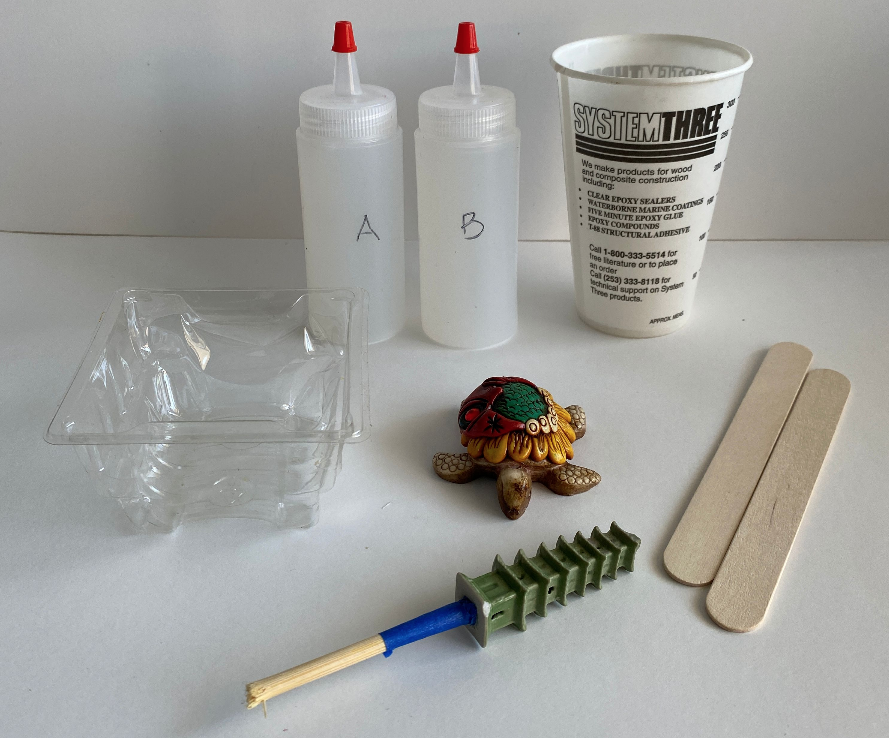Find a pattern to cast. Describe its geometry. Will it require a one-part mold or a two-part mold? Does it float? How will you hold it in place while curing?
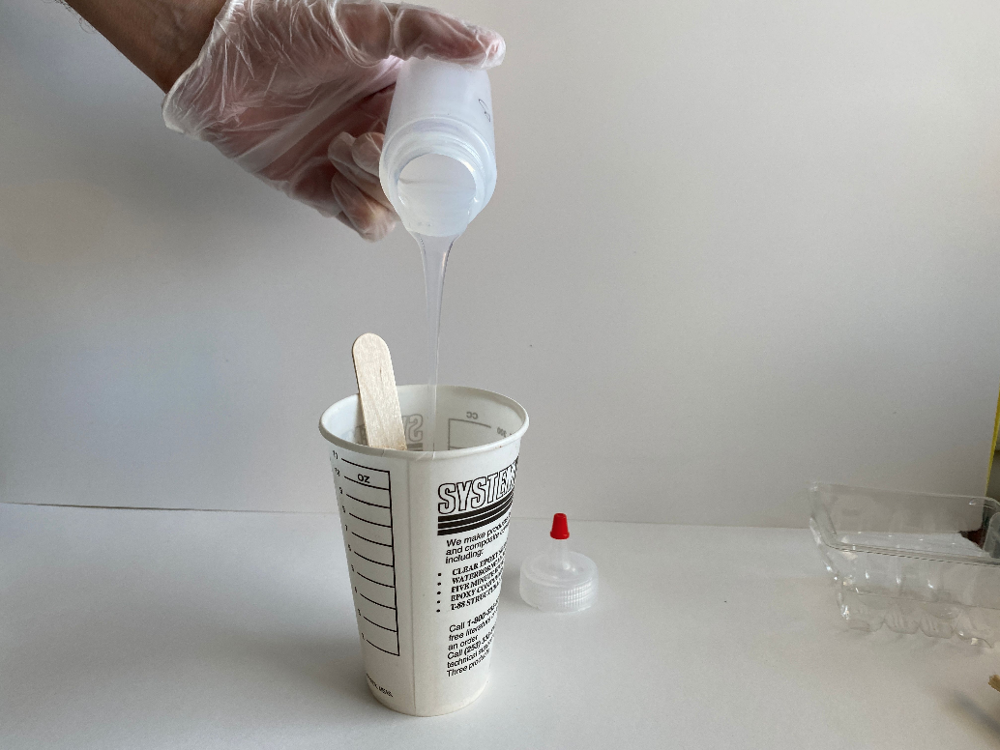Mix part B first.
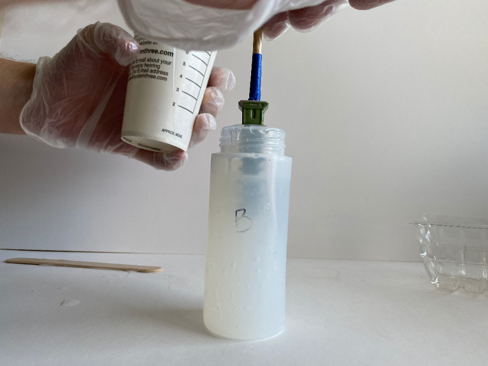Combine equal amounts of parts A and B.
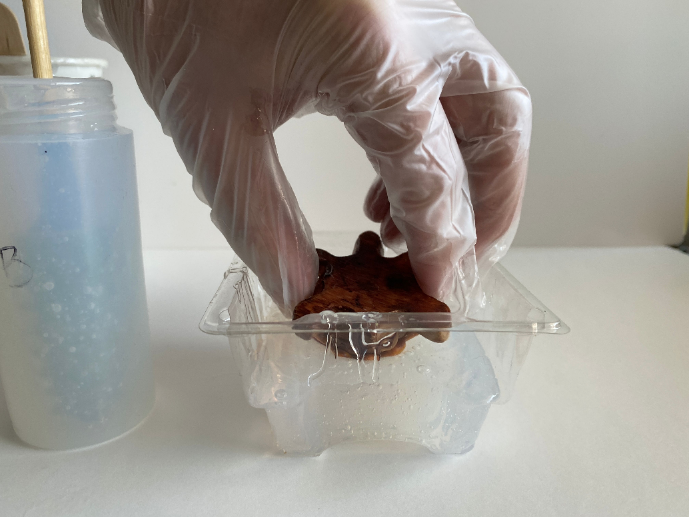The pot life is ~25 minutes. Fill a flask (container) with the mixture and place the pattern inside.
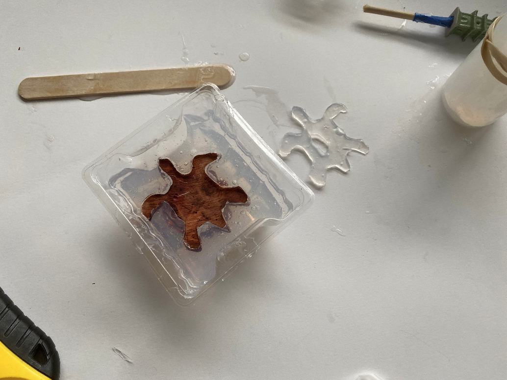Take care to ensure the pattern doesn't float or sink. If it does, you may want to use sticks hold it in place while the mold cures.
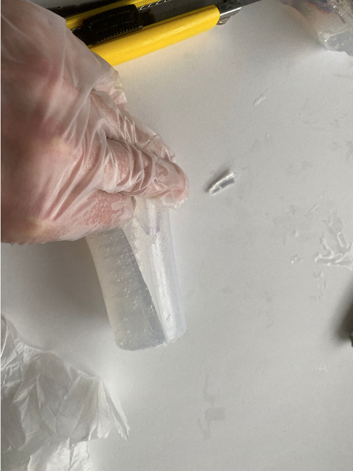You may also need to include a sprue (pour hole) and a vent to allow air to evacuate the mold as the casting medium is poured in.
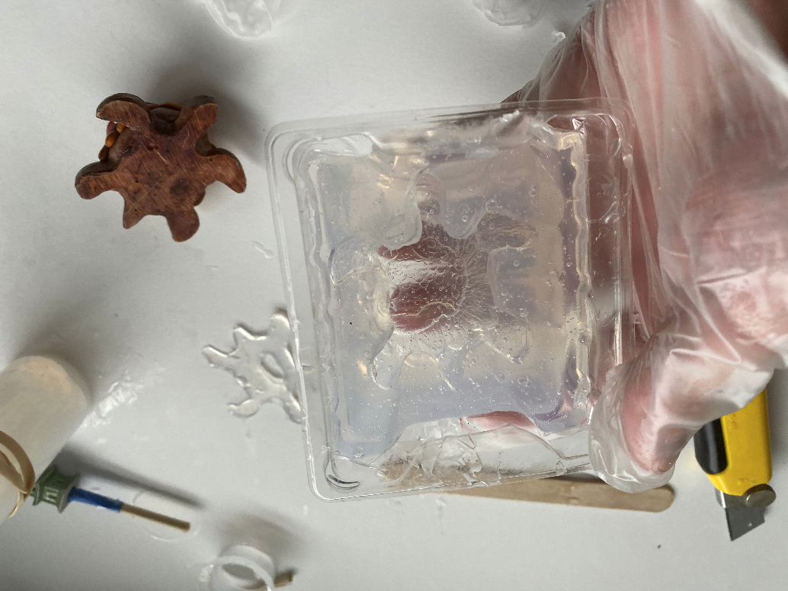 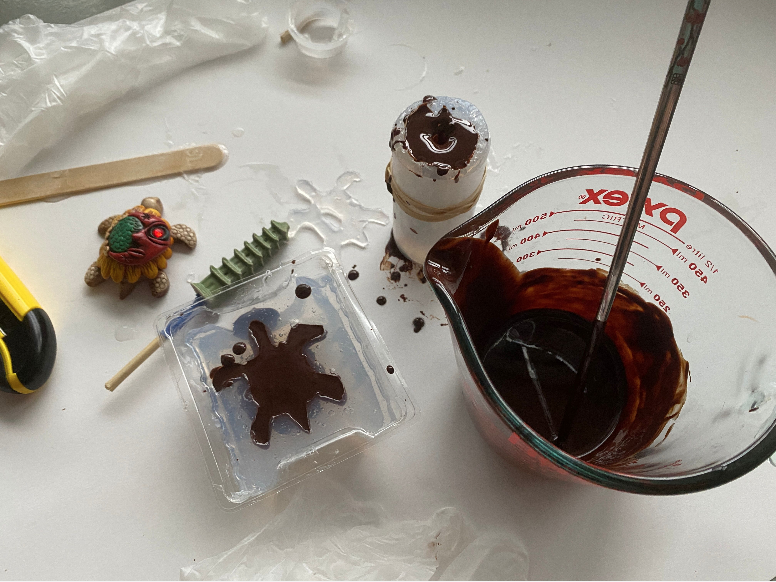 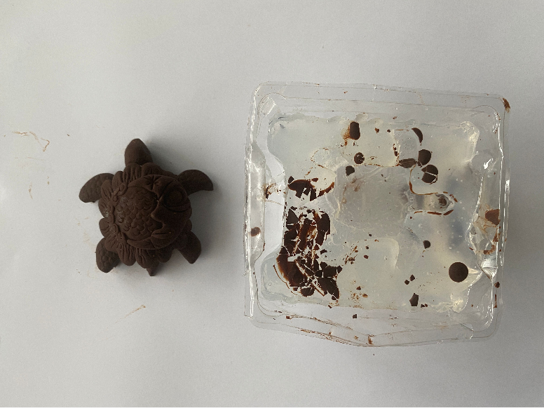 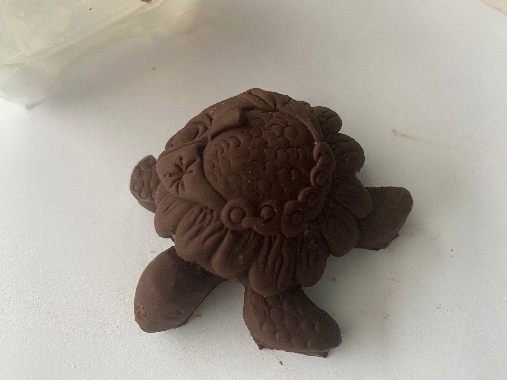 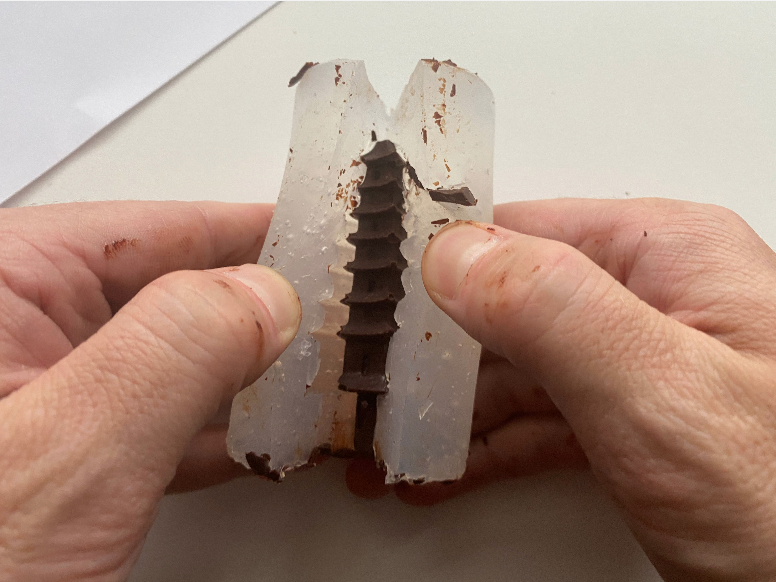
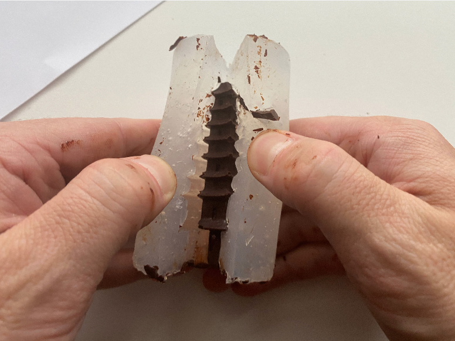